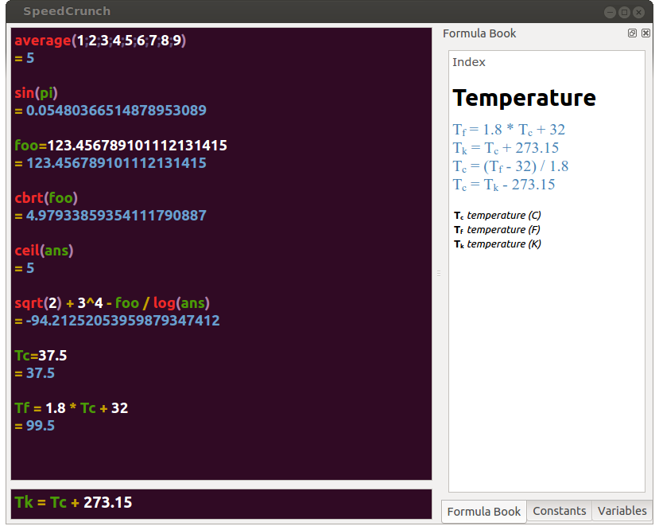
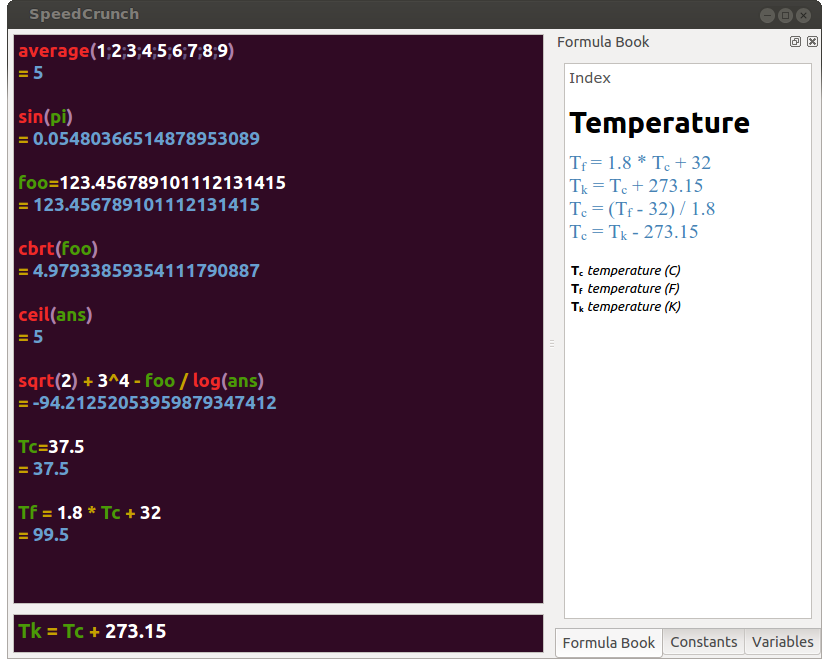

If you find a bug or have a feature request, please enter it in our issue tracker.
New features, bug fixes and translations are very welcome.
If all you can share with us is your opinion, that's certainly valued as well.
This program is open-source.
You can redistribute and/or modify it under the terms of the GNU General Public License.
It is distributed in the hope that it will be useful, but without any warranty.
At your fingertip
Just type an expression and press Enter.
What you typed and its result will appear in the scrollable result display.
Results can be immediately presented as you type without sending them to the history.
A myriad of functions
In addition to the basic algebraic operators, some common functions from mathematics, physics and electronics are available.
Take advantage of function name auto-completion as you type, or browse all functions in a searchable table.
Separate function arguments with a ; (semicolon) character.
Unlimited variables
Store results in a variable, e.g. myVar = sin(1.23) which can be reused in y = 2*x.
There is a special variable, ans, that always stores the result of the previous calculation.
Another built-in variable, pi, holds one of the most important constants in the world.
Like functions, variables are covered by auto-completion.
Syntax highlighting
Expressions can be colored according to their syntax.
You can easily distinguish numbers, variables, functions and see matched parentheses.
A number of color schemes are available.
Up to 50 decimals of precision
With complex calculations involving a chain of operations, this ensures a smaller rounding error at the end.
Result formats like scientific and engineering are available.
History repeats itself
Bring back a previously entered expression with the up and down keyboard arrows.
The (limited) expression history is saved between sessions and is therefore available even after application restart.
Smart correction
Typing sin followed by Enter is translated to sin(ans).
Also, functions don't require parentheses if a simple number or variable is used as argument, i.e. sin pi + 1 is accepted as sin(pi) + 1.
Closing parentheses can be skipped, e.g. cos(pi/4 followed by Enter is automatically corrected to cos(pi/4).
Version 0.10.1 (May 2008)
 Microsoft Windows
Microsoft Windows
Installer:
SpeedCrunch-0.10.1.exe (2.5 MB)
To perform the installation, just click on the file to run it and then follow the step-by-step instructions.
After installed, run it from Start > All Programs > SpeedCrunch.
Portable Edition:
SpeedCrunch-0.10.1.zip (2.4 MB)
No installation.
Take it everywhere.
Simply download the archive, extract and run by clicking on the executable file inside.
 Mac OS X
Mac OS X
Universal Binary bundle:
SpeedCrunch-0.10.1.dmg (6.6 MB)
It should work on Mac OS X 10.3 (Panther) and above.
 Linux
Linux
SpeedCrunch is available on all major Linux distributions.
Please use your distribution's software center application to search and install Speedrunch.
Note that packages available from distributions are not necessarily the latest version.
 Source code
Source code
Tarball: speedcrunch-0.10.1.tar.gz (1.6 MB)
- Extract to temporary directory
- Run cmake . from the src folder, followed by make
- Install with make install (might need administration privileges)
NOTE: the following tools and libraries are required:
- CMake (minimum version 2.4.4)
- Qt (minimum version 4.6 and including development environment)
 Development repository
Development repository
Clone one of the redundant Git repositories:
 
